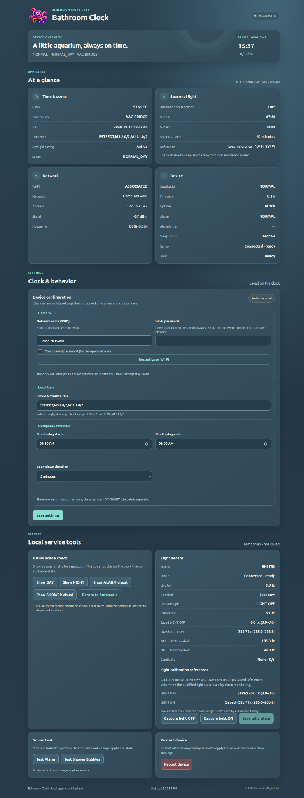

Bathroom Clock V2
Bathroom Clock V2 is a compact embedded appliance designed to combine ambient timekeeping with an occupancy-aware alarm.
In other words, we had a problem with a member of the household sleeping on the toilet in the middle of the night.
The system uses ambient-light sensing to infer room activity, applies qualified state transitions and configurable timing rules, and escalates from a passive clock display to an audible alarm when the light stays on too long during configured hours.
- Platform
- Raspberry Pi Pico W / RP2040
- Display
- 2.4-inch 240 × 320 ILI9341-compatible TFT
- Inputs
- BH1750 light sensor, network time, local service controls
- Status
- Working engineering prototype; firmware 0.1.6 candidate
The problem was real—and very specific
A conventional bathroom clock does nothing to discourage someone from falling asleep on the toilet during nighttime bathroom visits. The first requirement wasn’t “build a smart clock.” It was to recognize sustained room activity during configured monitoring hours and sound an alarm if it goes on too long.
The resulting clock still needs to feel pleasant during ordinary use. Most of the time, it’s a small animated aquarium. The alarm, Shower Mode, setup, and diagnostics stay out of the way until they’re needed.
So what does it actually do?
During the day, the octopus sits on the reef and blinks now and then. A clownfish swims between resting spots, a sea turtle occasionally crosses the scene, and a tiny pixel fish swims past. When local time is synchronized, the current time stays on screen.
At sunset, the aquarium changes to its NIGHT scene using local civil time and the calculated sunrise/sunset schedule. The clownfish settles into a resting spot while jellyfish drift through from time to time. Around midnight, the octopus closes its eyes and goes to sleep until 4 a.m. The pixel fish and turtle are daytime actors; they don’t appear in the NIGHT scene.
And the practical purpose? During configured sleep hours, turning on the bathroom light starts a countdown. Turn it off before time runs out and the countdown is cancelled. If the light is still on at zero, the alarm sounds. Turning the light off silences it, but to clear and rearm the alarm, leave the light off for ten continuous seconds. Turn it back on sooner and the alarm resumes—so a quick switch flick can’t reset it.
One appliance, explicit owners
The firmware is a cooperative C++ application. A central App brings together services with clear jobs, so the display, browser, sensor, and network don’t keep competing copies of device state. The firmware owns the state machine; interfaces observe it and can request bounded actions.
Observe
BH1750 samples, Wi-Fi state, NTP replies, configuration, and monotonic time enter through their owning modules.
Qualify
Sensor freshness, calibration, hysteresis, time-source policy, and Shower intent are resolved before they gain application authority.
Decide
The state machine owns countdown, alarm, rearm, Shower Mode, and setup/waiting transitions.
Present
TFT scenes, I²S audio, serial status, and the local WebUI consume the resulting authoritative state.
Hardware architecture
The current platform is a Raspberry Pi Pico W with an RP2040. Its display is a 2.4-inch, 240 × 320 SPI TFT, used in 320 × 240 landscape orientation. The exact controller IC hasn’t been positively identified, but the panel has been physically exercised at 10 MHz SPI. A GP22 PWM output controls the backlight; its visual transition has been accepted, while direct LED-current suitability remains an open electrical question.
A BH1750 on I²C0 measures ambient light. The Pico W sends 16 kHz, 16-bit stereo I²S to a MAX98357A amplifier and a small 8-ohm speaker. The prototype uses a custom perfboard and wiring arrangement, powered over USB from a genuine Samsung Adaptive Fast Charging wall adapter operated as a 5 V supply. Final power-path and amplifier measurements, moisture/ingress work, enclosure completion, and final-enclosure acoustic qualification are still open. This is an engineering prototype, not a certified bathroom product.
There’s a lot of physical design behind that prototype. The enclosure work accounts for the front geometry and display tilt, limited depth behind the LCD, a speaker bucket, a notch for USB access, and a light pipe. A modular rear wall is intended to keep service access practical. The electronics use a perfboard carrier with a socketed Pico, grouped connectors, strain relief, and labeled wiring so the assembly can be maintained instead of becoming a sealed tangle. The custom enclosure and speaker chamber are still in progress; this describes the design direction and prototype strategy, not a finished enclosure.
Firmware architecture and bounded execution
The main loop runs one complete application tick, feeds the watchdog only after that tick returns, then yields briefly. The tick services Wi-Fi, time sync, sensor acquisition and classification, Shower gesture recognition, application policy, audio, rendering, Web requests, and diagnostics. Countdown, rearm, and Shower durations use monotonic time, so a wall-clock correction can’t unexpectedly change an active timer.
The display subsystem owns the scenes, TFT, and backlight transitions. It targets 25 frames per second and restores changed regions through a fixed 8,192-byte, 64 × 64 RGB565 patch buffer. There’s no full-screen framebuffer or per-frame heap allocation. The small pixel fish sprite is generated at startup and joins the other scene actors.
Artwork and lettering made for a small screen
The aquarium scenes didn’t go straight from an image generator to the TFT. Visual elements were generated or sourced as starting points, then composited and refined by hand in GIMP. The DAY, NIGHT, Shower, and Alarm layouts were composed for the device’s 320 × 240 screen, where readability, visual hierarchy, and the space available for the clock all had to work together. The scene images here show those finished compositions.
The clock uses custom image glyphs rather than a stock font: digits 0–9, a colon, full AM/PM marks, and three versions of the digit 8. Each 8 has a small starfish, placed differently in each variant. When a digit position changes to 8, firmware pseudo-randomly picks one and keeps it there while that position remains an 8; it doesn’t reshuffle the starfish on every clock update. The variable-width glyphs help the 12-hour H:MM display fit the scenes. The renderer is integrated, though focused physical inspection of the final glyph set is still listed as open in the resource ledger.
Application behavior is a state machine, not a threshold
- Startup: missing credentials enter
CONFIG_AP; configured devices wait for network time before normal operation. - Normal: the current DAY or NIGHT aquarium scene is shown. During the configured monitoring interval, qualified
LIGHT_ONstarts the occupancy countdown. - Countdown: qualified
LIGHT_OFFcancels it.UNKNOWNpreserves the deadline but cannot trigger an alarm. Confirmed ON at or after expiry entersALARM. - Alarm: the alarm scene and repeating submarine sound continue without an automatic timeout. The alarm survives the end of the monitoring interval and cannot be dismissed from the WebUI.
- Rearm: light-off stops the alarm immediately, then ten continuous seconds of qualified OFF are required. ON before completion resumes the existing alarm without a new countdown; UNKNOWN resets the rearm interval.
- Shower Mode: a deliberate bathroom-light gesture can preempt normal, countdown, alarm, or rearm state. Exit always checks current conditions instead of restoring stale state.
Time comes from the network, not an onboard GPS
The Bathroom Clock has no GPS receiver. Its preferred NTP source is AAC Time Bridge →, the local network appliance associated with the separate Absurdly Accurate Clock → project. If AAC-BRIDGE can’t be resolved or reached after bounded attempts, firmware falls back to NIST. After syncing to NIST, it periodically retries AAC-BRIDGE so the preferred local source can resume.
A successful sync sets a UTC-backed system clock. The configured POSIX timezone rule converts it to local civil time, including daylight-saving behavior. If the network drops, that clock keeps running while firmware retries its time sources. That’s software-clock holdover, not a measured claim about long-term oscillator accuracy.
DAY/NIGHT scene choice is independent of occupancy monitoring hours. Firmware interpolates a compact annual sunrise/sunset reference table, applies DST from the local-time subsystem, and selects DAY from sunrise inclusive to sunset exclusive. The algorithm and host tests are in place; the reference table’s external provenance and a dedicated physical seasonal-boundary qualification remain open.
Ambient light is calibrated and qualified
The BH1750 is read about every 200 ms. During calibration, the device collects multiple light-off and light-on samples, checks that the ranges are far enough apart, then derives separate thresholds with hysteresis. Those saved calibration values—not a hard-coded lux number—set the runtime boundary.
One lux reading isn’t enough to change state. The firmware needs three distinct, fresh readings spanning at least 400 ms; repeating the same sample can’t advance qualification. If data gets stale for more than 1,000 ms, the light state becomes UNKNOWN. Raw lux never starts or silences the alarm directly. Bench tests on the current setup observed candidate-to-qualified changes in about 402–409 ms in both directions. Final calibration in the installed bathroom remains to be done.
Automatic display brightness is separate planned behavior and is not currently driven by the BH1750. The accepted DAY/NIGHT fade is a presentation transition, not an ambient-brightness controller.
Shower Mode keeps a normal shower from triggering the alarm
After the bathroom light has been qualified ON continuously for 10 seconds, three deliberate OFF/ON cycles must produce six alternating dark/bright sensor observations within a 3-second window, ending bright. Each edge needs a distinct fresh BH1750 sample in the strong dark or bright region derived from calibration; ambiguous readings and repeated same-level readings don’t count. This separate gesture recognizer doesn’t change the ordinary light classifier. It has no time-of-day gate and can enter from NORMAL, COUNTDOWN, ALARM, or ALARM_REARM.
In other words, flip the light off and back on three times quickly and the clock enters Shower Mode for up to 30 minutes, with the toilet-sleep alarm suppressed while you’re showering. No extra physical button was needed: the bathroom light switch is the control. Shower Mode changes to its own scene and plays the bubbles sound, so a normal shower doesn’t look like an overlong toilet visit.
On entry, any active alarm stops immediately. The bubbles sound plays once, and the occupancy alarm stays suppressed while Shower Mode is active. It exits after 1.5 seconds of continuously qualified light-off, or at the 30-minute failsafe. Qualified light-on or UNKNOWN interrupts the light-off exit timer. Either way, the firmware returns through NORMAL and reevaluates current conditions rather than restoring an old state. The full-duration Shower test, gesture entry, alarm preemption, and light-driven exit have been exercised on the bench hardware.
Hear the Shower Mode bubbles
Audio without carrying full PCM clips
The shared I²S transport uses six 1,024-frame user buffers and cooperative refill budgets. The alarm is stored as 18,432 bytes of IMA ADPCM and decoded incrementally; a full decoded PCM copy is never retained. Shower confirmation is synthesized from a deterministic 27-event table, again avoiding a full PCM effect asset. Fixed gains and saturation protection are part of the accepted implementation.
The submarine klaxon and procedural Shower bubbles have been auditioned and accepted with the Pico W, MAX98357A, and small speaker. Speaker testing and replacement were part of hardware qualification. That’s functional/acoustic evidence, not a measurement of amplifier waveforms, SPL, current or thermal margin, grounding, gain straps, or final-enclosure acoustics.
Hear the alarm
This is the klaxon clip that repeats while the alarm is active.
A local appliance interface—not a cloud dashboard
The Pico W serves its own responsive HTML, CSS, JavaScript, and artwork. Normal local use needs no cloud service, CDN, remote font, or external runtime dependency. The interface reports device, network, time source, solar scene, light, alarm, uptime, and reset status; it also provides configuration, calibration, scene inspection, bounded sound tests, Wi-Fi setup, and explicit service controls.
The firmware owns the state. The WebUI observes and commands the device; it doesn’t run a second copy of the clock logic. Typed, bounded HTTP routes validate actions on-device. Scene tests affect presentation only—they don’t change clock time, alarm/countdown/Shower state, or saved settings. Sound tests use the production audio paths, but can’t dismiss or snooze a real alarm.

Persistent configuration and recovery
Configuration lives in a versioned, CRC-checked, two-slot LittleFS record. Firmware writes and verifies a new save before replacing the older slot, leaving the previous valid record available if an update is interrupted. The store holds Wi-Fi credentials, the POSIX timezone, one daily monitoring interval, countdown duration, and light-calibration references. Credentials aren’t compiled into firmware or returned by status APIs.
Missing credentials open the local setup access point immediately. A configured device that cannot associate during the bounded 120-second startup window also exposes setup. Runtime Wi-Fi loss has its own 120-second recovery path and does not take authority away from monotonic countdown, alarm, Shower, or local display behavior. Volatile application state is intentionally not persisted across reboot or brownout.
Watchdog recovery is intentionally simple
An active RP2040 hardware watchdog starts after synchronous application initialization with an 8,000 ms timeout. It is fed only after the full main application tick returns, so a genuinely stuck loop or non-returning service tick causes a reset. Healthy progress—not network, NTP, or sensor availability—is the feed criterion.
A watchdog reset simply restarts the appliance. Countdown, alarm, rearm, and Shower state are volatile and don’t survive it. The WebUI reports uptime and the best available reset reason for the current boot; it doesn’t keep a flash-written reset history. The implementation has passed build and host checks, but deliberate hardware fault injection, reset-reason observation, and worst-case tick timing still need physical qualification.
Resource engineering on the RP2040
This is a lot of product for a microcontroller with 2 MiB of flash and 256 KiB of SRAM: four full-screen RGB565 backgrounds, animated actors and clock glyphs, embedded WebUI assets, Wi-Fi and provisioning, network time and timezone handling, solar scene calculations, calibration and state machines, compressed and procedural audio, diagnostics, and watchdog support. We chose to keep it on the Pico W and make room through continuous measurement, bounded buffers, incremental decoding, careful asset choices, and deliberate feature tradeoffs—not by casually moving to a larger MCU. Static RAM is build-measured; it doesn’t include the runtime heap or stack.
- Production flash
- 1,552,688 B16,080 B calculated headroom
- Scene-dev flash
- 1,556,192 B12,576 B calculated headroom
- Sketch limit
- 1,568,768 BProduction uses about 99.0%
- Production static RAM
- 97,056 BPlatformIO build measurement
- Scene-dev static RAM
- 97,064 BPlatformIO build measurement
- Renderer working buffer
- 8,192 BFixed 64 × 64 RGB565 patch
Static RAM is not the whole runtime-memory story. I²S requests approximately 28,800 bytes of manager-side dynamic allocation, networking and framework code can allocate additional memory, and neither heap nor stack high-water has been measured. The flash figure is a controlled capacity constraint, not a claim that every runtime margin is proven.
What has—and has not—been qualified
Physically exercised and accepted
- TFT scene artwork and the concealed DAY/NIGHT backlight transition at the 10 MHz SPI baseline.
- BH1750 communication, saved calibration, stable qualified light states, and observed qualification response.
- Normal sleep-hour countdown reaching ALARM; qualified light-off stopping the alarm; ON during rearm restoring it; continuous OFF completing rearm; and scene reconciliation.
- Shower gesture entry, alarm preemption, qualified-off exit, current-state reevaluation, 30-minute failsafe, both product sounds, and bounded WebUI audio previews.
Implemented or host/build verified; physical work remains
- Watchdog timeout/restart and reset-cause behavior require deliberate hardware fault injection.
- The latest setup-AP provisioning fix and runtime Wi-Fi recovery policy remain to be exercised on hardware.
- Seasonal solar boundaries, final bathroom light calibration, final power/amplifier electrical behavior, speaker chamber, enclosure, and installation acoustics remain open.
Scenes from the appliance
What’s next
A seven-day monitoring schedule is planned, not implemented. Today’s firmware has one daily interval. The plan is to let each calendar day have its own interval, so weekdays and weekends can differ, while reusing the existing alarm/state-machine logic. It would extend the current persisted configuration and select the interval using local weekday—no new scheduler subsystem. On upgrade, the current interval would be copied to all seven days to preserve behavior.
The WebUI’s decorative octopus artwork is another possible resource tradeoff: if the schedule editor needs more flash headroom, that artwork could be replaced with a much smaller, simpler octopus icon. That’s under consideration, not a decided change; core clock artwork and appliance behavior aren’t the target for cuts.